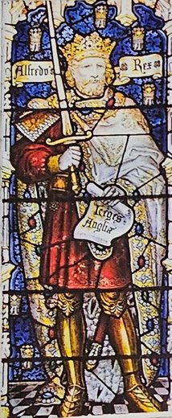
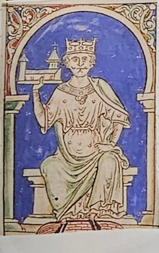
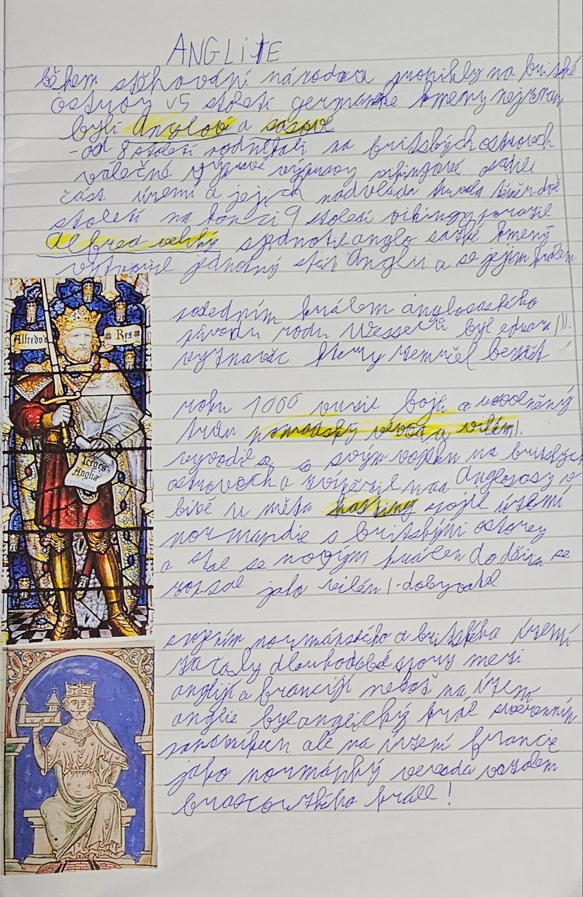

5. století – 1066
Anglie
Na Britské ostrovy přišli v 5. století Anglové a Sasové. Alfréd Veliký porazil Vikingy a sjednotil Anglii. Roku 1066 vyhrál normandský vévoda Vilém I. Dobyvatel bitvu u Hastingsu a stal se anglickým králem.
Zvýrazněné je v sešitě podtržené.
- 1066 Vilém I. Dobyvatel vítězí u Hastingsu a stává se anglickým králem
Anglosasové a Vikingové

Během stěhování národů pronikly v 5. století na Britské ostrovy germánské kmeny. Nejznámější byli Anglové a Sasové, proto se jim říká Anglosasové. Podle Anglů dostala jméno celá země, Anglie.
Od 8. století podnikali na Britské ostrovy válečné výpravy Vikingové, mořeplavci ze Severu. Část území osídlili a jejich nadvláda trvala téměř dvě století.
Na konci 9. století Vikingy porazil Alfréd Veliký. Sjednotil anglosaské kmeny, vytvořil jednotný stát Anglii a stal se jejím králem.
Proč je to důležité: dokud byly kmeny rozdělené, Vikingové je snadno porazili jeden po druhém. Spojené pod jedním králem se dokázaly ubránit. Proto má Alfréd přídomek Veliký.
Rok 1066: Vilém Dobyvatel

Posledním králem anglosaského původu z rodu Wessexů byl Eduard Vyznavač. Zemřel bez dětí, takže nebylo jasné, kdo po něm zdědí trůn.
Roku 1066 proto vypukly boje o uvolněný trůn. Normandský vévoda Vilém I. se svým vojskem připlul na Britské ostrovy a porazil Anglosasy v bitvě u Hastingsu. Stal se novým anglickým králem a spojil Normandii (kraj na severu Francie) s Anglií. Do dějin se zapsal jako Vilém I. Dobyvatel.
Proč je to důležité: v Anglii začali vládnout Normané a vznikl spor, který trval velmi dlouho (viz níže). Rok 1066 je jeden z nejznámějších letopočtů anglických dějin.
Proč se Anglie a Francie přely
Po spojení Normandie s Anglií nastaly dlouhodobé spory mezi Anglií a Francií. Anglický král totiž měl dvě role:
- v Anglii byl svrchovaným panovníkem, nad ním nebyl nikdo,
- ve Francii byl jako normandský vévoda vazalem francouzského krále.
Vazal je ten, kdo dostal od svého pána půdu a musí mu za ni sloužit a poslouchat ho. Anglický král tedy musel poslouchat francouzského krále. To se mu nelíbilo, a proto spolu oba státy dlouho bojovaly.
Paměťový obraz
- Andělé a saská dýka: Anglové a Sasové připlouvají v 5. století.
- Vikingská loď s dračí hlavou: Vikingové od 8. století, Alfréd Veliký je odráží.
- Zpovědník u prázdné kolébky: Eduard Vyznavač zemřel bez dětí.
- Rytíři na pláži u Hastingsu 1066: Vilém Dobyvatel přeplouvá z Normandie.
- Král se dvěma korunami, jednou se klaní: v Anglii vládne, ve Francii poslouchá jako vazal.
Vyzkoušej se
Odpověz nahlas, teprve pak otevři odpověď. Procvičit náhodně
Které germánské kmeny přišly v 5. století na Britské ostrovy?
Anglové a Sasové.
Kdo podnikal od 8. století výpravy na Britské ostrovy?
Vikingové.
Jak dlouho trvala nadvláda Vikingů?
Téměř dvě století.
Kdo porazil Vikingy na konci 9. století a co dokázal?
Alfréd Veliký; sjednotil anglosaské kmeny a vytvořil jednotný stát Anglii.
Proč bylo důležité sjednocení anglosaských kmenů?
Rozdělené kmeny Vikingové snadno porazili, spojené se ubránily.
Kdo byl posledním anglosaským králem z rodu Wessexů?
Eduard Vyznavač.
Proč roku 1066 vypukly boje o trůn?
Eduard Vyznavač zemřel bez dětí.
Kdo zvítězil roku 1066 v bitvě u Hastingsu?
Normandský vévoda Vilém I. Dobyvatel.
Která území Vilém Dobyvatel spojil?
Normandii a Britské ostrovy (Anglii).
Co je vazal?
Ten, kdo dostal od pána půdu a musí mu za ni sloužit a poslouchat ho.
Proč vznikly dlouhé spory mezi Anglií a Francií?
Anglický král byl v Anglii svrchovaným panovníkem, ale ve Francii jako normandský vévoda vazalem francouzského krále.
Zápis ze sešitu
Fotka stránky sešitu
